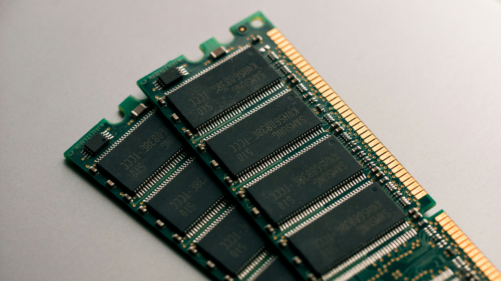

RAM
Random Access Memory
사용자가 자유롭게 내용을 읽고 쓰고 지울 수 있는 기억장치.
컴퓨터가 켜지는 순간부터 CPU는 연산을 하고
동작에 필요한 모든 내용이 전원이 유지되는 내내 이 기억장치에 저장된다.
'주기억장치'로 분류되며 보통 램이 많으면 한번에 많은 일을 할 수 있기에 '책상'에 비유되곤 한다.
책상이 넓으면 그 위에 여러가지 물품을 올려놓을 수 있고,
이후 그 물품을 다시 회수하면 그 물품이 있었다는 기록은 사라지기 때문이다.
